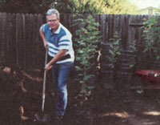

Bootstraps
How to garden for profit on less than an acre.
"Get Rich Quick." Open enough magazines or endure enough insom niac special late night TV and you'll be assaulted by "recipes for financial success" as diverse as swooping down on foreclosed real-estate and selling cosmetics over the Internet. While marginally more entertaining than the "Lassie" reruns they compete with, such ads are a tribute to the world's oldest industry (well, second oldest) ...swindlery. You won't get rich quick folks, provided you aren't strewing the walkway of your very old uncle Rockefeller with cooking grease. But there are good ideas out there, and we discovered one while talking to Michael and Linda Harlan. Both in their late 40s, Mike and Linda have carved out a piece of the good life in northern California, and they earn a full-time income working part-time hours. Not enough for you? What about a commute which consists of a step out their back door. What is this thunderstrike of a notion that has kept a roof over their heads..? Gardening.
For the past 11 years the Harlans have cultivated a nursery in their Sacramento County backyard, something they say any industrious plant lover can do. A small nursery doesn't take a great deal of time, vast sums of start-up cash, or a sweeping expanse of property. The Harlans spend just four hours a day managing their business, which they started in their half-acre backyard with a $200 investment.
Their business strategy is a simple one. Buy young plants in six-pack flats, repot them into gallon containers, and, once grown, sell them to retail nurseries for a profit. There's a bit more to it than that, but the Harlans are the first to admit that their business idea is so straightforward that even a gardening novice can earn $5,000 growing container plants on a 1,000-square-foot plot of land.
What to plant. First, do some research. Read gardening magazines and journals to find out what's popular. Readers often go to retail nurseries specifically looking for the plants featured in the articles.
Next, pay a visit to the local nursery. Ask the manager which plants consistently sell out and what the nursery could always use more of. Don't be discouraged if the larger, more established nurseries have saturated the market with the most popular plants; try cultivating plants that are harder to find, such as ethnic or heirloom vegetables.
If winter temperatures dip dramatically in your area and you don't have a green house, your choices will be limited to what can survive the cold. Keep in mind that plants in containers freeze and overheat faster than plants growing in the ground. Check with a nearby university agricultural extension service to find out which plants can be successfully grown in containers where you live.
Still can't decide? Then grow something that flowers. Michael's rule of thumb: "A pretty flower sells an ugly plant." One of the hottest trends in the nursery business nowadays is flowering perennials, such as delphiniums, irises, and geraniums. These plants are cold hardy, fairly easy to grow, and since they live longer than a year, their marketing time isn't limited to one season.
Zoning matters. Check local zoning codes before starting a home-based nursery. Land zoned for farm, commercial, or industrial use shouldn't encounter any problems, but smaller residential lots may be restricted as to the size of the greenhouse that can be built or may be prohibited from allowing customers to stop by for pickup.
License required. All plant sellers are required to obtain an annual nursery license from their state or county department of agriculture. The Harlans pay $100 for their half-acre plot. And while a license is not difficult to get, it may not be necessary. Some states permit hobbyists to obtain a no-fee license, which allows the gardener to sell up to $500 worth of plants within a limited distribution area. Before parting with your cash be sure you're ready to operate a for-profit business and not still practicing a hobby.
Seed Money. The Harlans' initial capital investment amounted to two shovels, two sprayers, a wheelbarrow, pruning shears, and a water delivery system-also known as a garden hose-all still in use. The couple's one major expense was a $1,200 used pickup, which they were able to claim as a business deduction on their tax returns.
Growers in the Southwest may need to construct a shade cloth to protect plants from the sun, while those in colder climates will need a greenhouse if they plan to cultivate plants year-round. A better method for cold-weather entrepreneurs may be to sell all the containers before winter hits and begin again with new plants in the spring.
Time is Money. You've probably noticed that a tomato plant in a 5-gallon container costs more than one in a six-pack flat. Same plant, higher price. Why the difference? You're paying for someone else's investment of time. You could plant tomato seeds for pennies, but you'd have to wait a couple months before biting into the season's first ripe tomato.
With this "bigger plants bring bigger profits" theory in mind, the Harlans opt for fast-growing plants that they can turnaround quickly. For the past few years, the couple has concentrated their efforts on growing trees, primarily birch and maple. But the Harlans don't plant seeds and wait years for their trees to grow large enough to sell. They buy 2-year-old saplings, shipped UPS from Montana. They repot the trees into 15-gallon containers and then sell the trees after about six months.
Every plant has a slow-growing period and a fast-growing one, Michael says. Buy plants at the end of their slow-growing phase, repot and care for them during their fast-growing period, and then sell them when they're lush and full and the root ball fills out the larger pot. Verbena is fastgrowing, thrives with minimal care, and is a good choice for beginners. "Keep it simple," Michael advises. "Try the hard stuff for fun. You want something that you can do quickly."
To market, to market. When your plants are of sufficient quantity and quality, it's time to sell them. The simplest places to start are the locally owned nurseries in your area, especially those you've already done business with. Make the initial contact in person and take along samples of your plants. At first you may have to price your plants below typical wholesale rates or offer them on consignment. But if you're persistent and provide an adequate quantity of quality plants at competitive prices, you can become a regular supplier.
The truly ambitious can try to tap the chain-store markets. The chains are a harder sell, Michael warns, since they typically will only do business with a select list of growers that must be approved by the head office. Most also require larger shipments than many backyard nurseries can provide. But if you do land a chain store, it may be the only account you'll need.
Don't limit your marketing to retailers, though. Park and school districts, homeowner associations, golf courses, and cemeteries all require a steady supply of plants and bedding materials. Whatever doesn't sell to the retailers take to the local farmers' or flea market and price it to sell. "The truth is you can eventually move everything you grow," Michael says. "You just have to find the right price."
Remaining flexible with their pricing and watching for bargains is how the Harlans grow their business. They don't sit around twiddling their green thumbs during the six months it takes their trees to grow to market size. If they spot latania on sale for $1.50 at a discount nursery or hardware store, they snap up as many plants as they can haul away. They then repot each of those $.25 plants with a few pennies of soil into the gallon cans the trees were originally shipped in. After eight weeks of watering, they sell each can of latania to a retailer for $2.
As long as growers learn the market, produce quality plants, and, above all, keep it simple, the backyard nursery is an enjoyable, rewarding way to make money. "When you find something that works," Michael says, "Stick to it and trust the process."
Details on Mike and Linda Harlan's home-based business are included in their book, Growing Profits: How to Start and Operate a Backyard Nursery (Moneta Publications, 1997). You can order it through MOTHER'S bookshelf by calling 1-800-888-9098. Ask for product #MEB249.
|
Mike, Linda, and their green gold mine. |
 Mike mugs for the camera in front of an afternoon's work. |
|